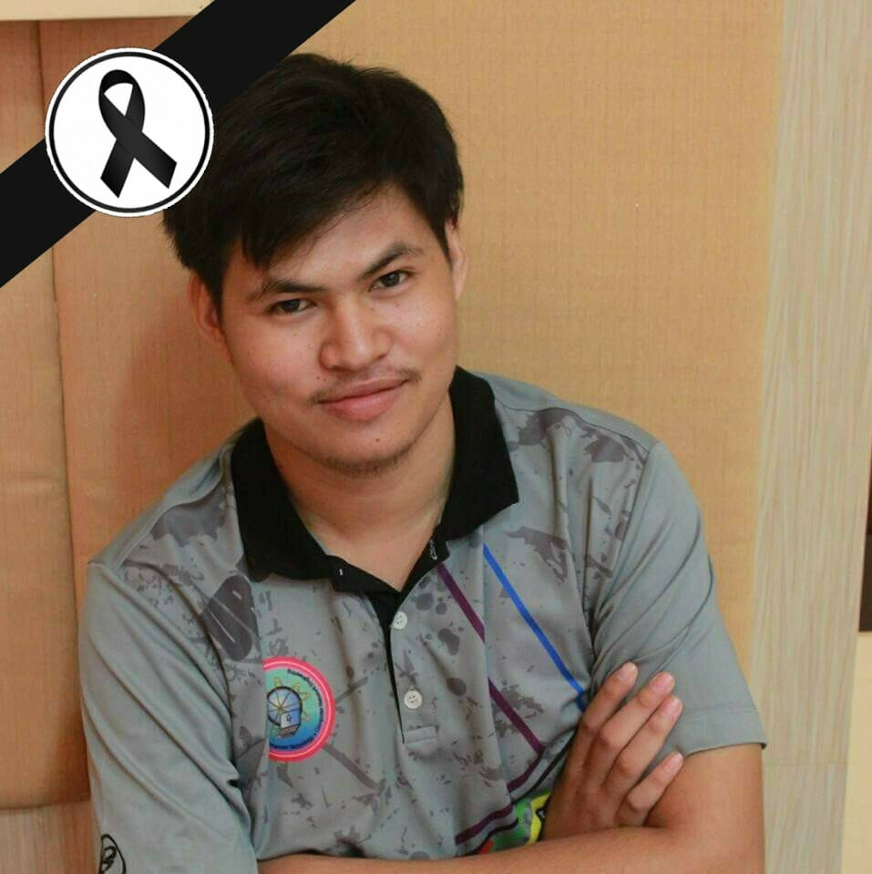

ประวัติข้อมูลส่วนตัว

นาย เอกวัฒน์ หอมจันทร์
ที่อยู่ปัจจุบัน บ้านเลขที่ 7 หมู่ที่ 8 ตำบล แจระแม
อำเภอเมือง จังหวัดอุบลราชธานี 34000
เบอร์โทรศัพท์ 080-275-5875
ข้อมูลส่วนตัว
วัน - เดือน - ปีเกิด 21 กรกฎาคม 2540 อายุ 21 ปี
น้ำหนัก 85 กก. ส่วนสูง 191 ซ.ม.
สัญชาติ ไทย เชื้อชาติไทย
ศาสนา พุทธ สถานภาพ โสด สุขภาพ แข็งแรง
การศึกษา
- 2553 – 2556 ระดับมัธยมศึกษาตอนต้น โรงเรียนวารินชำราบ เกรดเฉลี่ย 2.14
- 2557 – 2559 ระดับมัธยมศึกษาตอนปลาย โรงเรียนวาริชำราบ เกรดเฉลี่ย 2.43
- 2559 – ปัจจุบัน ระดับปริญญาตรี มหาวิทยาลัยราชภัฏอุบลราชธานี คณะเทคโนโลยีอุตสาหกรรม สาขาเทคโนโลยีคอมพิวเตอร์
เกรดเฉลี่ย 2.89
ความรู้/ทักษะ
- สามารถใช้คอมพิวเตอร์โปรแกรม Visual studio,และโปรแกรม Microsoft Office ได้
ความสนใจพิเศษ
- สนใจด้านการซ่อมบำรุงคอมพิวเตอร์
- สนใจด้านการประกอบคอมพิวเตอร์
บุคคลอ้างอิง
- อาจารย์ศิริภิญญา อาสา ตำแหน่งอาจารย์ประจำสาขาเทคโนโลยีคอมพิวเตอร์ โทร.082-1375372
- อาจารย์ปิยภัทร โกษาพันธุ์ ตำแหน่งอาจารย์ประจำสาขาเทคโนโลยีคอมพิวเตอร์ โทร.088-081-1795
- อาจารย์ภัทรกิตติ ไชยสิงห์ ตำแหน่งอาจารย์ประจำสาขาเทคโนโลยีคอมพิวเตอร์ โทร.086-867-5646